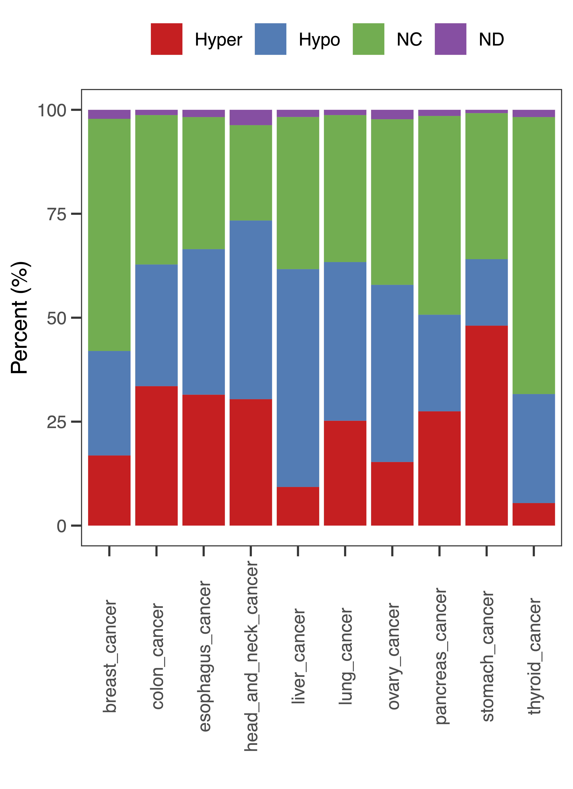

3 Figure 3
 Figure 3. MHBs are associated with dysregulation of gene expression in cancers. (A) Annotation of MHBs to DMRs. Hyper, hyper-DMR. Hypo, hypo-DMR. NC, no significant change. ND, not determined. (B-C) The enrichment of MHBs in hyper- and hypo-DMRs, respectively. Enrichment test was performed by R package LOLA, using the union of MHBs as the background. The resulting p-values for significant enrichment were ranked across all cancer types (FDR < 0.01). The black rectangle highlights the top one. Nonsignificant (FDR > 0.01) results are shown in grey. (D) Association of MHBs and dysregulation of gene expression in ESCC. For a dataset of esophageal squamous cell carcinoma (ESCC, GSE149608) with 10 tumor and paired 10 normal WGBS and RNA-seq samples, DMRs were identified using Metilene (FDR < 0.05, Δbeta > 0.1). ESCC cancer MHBs (n = 27497) were identified using mHapSuite. The identification of potentially genes regulated by MHB and DMR using rGREAT with default parameters. Meanwhile, the DEGs (n = 2769) between ESCC and adjacent normal tissue performed by wilcoxon rank sum test (Log2FC >= 1, FDR < 0.05). Genes without DMRs were used to construct a 2x2 contingency table that separates each gene into one of four categories based on two factors, i.e., status of MHB and differential expression. Statistical significance was evaluated by Fisher’s exact test. (E) A heatmap shows the mean methylation and expression of upregulated genes that also contains MHBs. (F) A heatmap shows the transcription factors (TF) activities between ESCC and normal tissues. The estimation of TF activities with RNA-seq by using decoupleR. The top 50 variable regulators activity difference between ESCC and normal samples were displayed. The genes involved in G2M checkpoint, Wnt signaling and P53 pathway were colored in red, green and blue, respectively. (G). TF ChIP-seq profiles from the ESCC cell line TE5 and TE10 to validate the activity of KLF5 and SOX2. MHB regions were classified as ESCC tumor-specific (n = 20778), normal-specific (n = 10501), or shared (n = 7368). Random genomic background (n = 27497) was generated by ‘bedtools shuffle’ function.
Figure 3. MHBs are associated with dysregulation of gene expression in cancers. (A) Annotation of MHBs to DMRs. Hyper, hyper-DMR. Hypo, hypo-DMR. NC, no significant change. ND, not determined. (B-C) The enrichment of MHBs in hyper- and hypo-DMRs, respectively. Enrichment test was performed by R package LOLA, using the union of MHBs as the background. The resulting p-values for significant enrichment were ranked across all cancer types (FDR < 0.01). The black rectangle highlights the top one. Nonsignificant (FDR > 0.01) results are shown in grey. (D) Association of MHBs and dysregulation of gene expression in ESCC. For a dataset of esophageal squamous cell carcinoma (ESCC, GSE149608) with 10 tumor and paired 10 normal WGBS and RNA-seq samples, DMRs were identified using Metilene (FDR < 0.05, Δbeta > 0.1). ESCC cancer MHBs (n = 27497) were identified using mHapSuite. The identification of potentially genes regulated by MHB and DMR using rGREAT with default parameters. Meanwhile, the DEGs (n = 2769) between ESCC and adjacent normal tissue performed by wilcoxon rank sum test (Log2FC >= 1, FDR < 0.05). Genes without DMRs were used to construct a 2x2 contingency table that separates each gene into one of four categories based on two factors, i.e., status of MHB and differential expression. Statistical significance was evaluated by Fisher’s exact test. (E) A heatmap shows the mean methylation and expression of upregulated genes that also contains MHBs. (F) A heatmap shows the transcription factors (TF) activities between ESCC and normal tissues. The estimation of TF activities with RNA-seq by using decoupleR. The top 50 variable regulators activity difference between ESCC and normal samples were displayed. The genes involved in G2M checkpoint, Wnt signaling and P53 pathway were colored in red, green and blue, respectively. (G). TF ChIP-seq profiles from the ESCC cell line TE5 and TE10 to validate the activity of KLF5 and SOX2. MHB regions were classified as ESCC tumor-specific (n = 20778), normal-specific (n = 10501), or shared (n = 7368). Random genomic background (n = 27497) was generated by ‘bedtools shuffle’ function.
3.1 (A). MHB vs DMR
# =============== shell command ====================
# 1. DMR calling (Metilene)
# prepare the metilene input files
tag="breast"
metilene_input.pl --in1 merged_CpG/${tag}_T_Merged_CpG.bedGraph \
--in2 merged_CpG/${tag}_N_Merged_CpG.bedGraph \
--out metilene_input/${tag}_metilene_input.bedGraph \
--h1 g1_${tag}_T \
--h2 g2_${tag}_N
# call DMR
metilene_linux64 -t 10 -c 2 -m 5 -a g1 -b g2 metilene_input/${tag}_metilene_input.bedGraph | \
sort -V -k1,1 -k2,2n | \
awk '{OFS="\t"} {if ($4<=0.05 && $5<0.1) {print $1,$2,$3,$4,$5,$6,$7,$8,$9,$10,"Hypo"} else if($4<=0.05 && $5>0.1){print $1,$2,$3,$4,$5,$6,$7,$8,$9,$10,"Hyper"} else {print $0,"NC"}}' > metilene_res/${tag}_de_novo_DMR.bed
# 2. tissue type MHB overlap with tissue type DMR
DMR_path="metilene_res/"
tsMHB_path="Data/Processed_data/MHB/tumor"
for i in `ls $DMR_path/*_DMR.bed`
do
a=$(echo ${i##*/} |sed 's/_de_novo_DMR.bed//g')
if [[ "${a}" == *"breast"* ]];then
tag_T="MHB_BRCA.bed"
elif [[ "${a}" == *"colon"* ]];then
tag_T="MHB_COAD.bed"
elif [[ "${a}" == *"esophagus"* ]];then
tag_T="MHB_ESCA.bed"
elif [[ "${a}" == *"head_and_neck"* ]];then
tag_T="MHB_HNSC.bed"
elif [[ "${a}" == *"lung"* ]];then
tag_T="MHB_NSCLC.bed"
elif [[ "${a}" == *"liver"* ]];then
tag_T="MHB_LIHC.bed"
elif [[ "${a}" == *"pancreas"* ]];then
tag_T="MHB_PACA.bed"
elif [[ "${a}" == *"ovary"* ]];then
tag_T="MHB_OV.bed"
elif [[ "${a}" == *"stomach"* ]];then
tag_T="MHB_STAD.bed"
elif [[ "${a}" == *"thyroid"* ]];then
tag_T="MHB_THCA.bed"
fi
tsMHB=${tsMHB_path}/${tag_T}
bedtools intersect -a ${tsMHB} -b ${i} -wa -wb -loj | \
awk '{OFS="\t"} {if ($14==".") {print $1,$2,$3,"'"${a}"'","NC"} else {print $1,$2,$3,"'"${a}"'",$14}}'|\
bedtools merge -i - -c 4,5,5 -o distinct,distinct,count_distinct | \
sort -k1,1 -k2,2n | \
awk '{OFS="\t"} {if($6!=1) {print $1,$2,$3,$4,$5,$6,"ND"}else{print $0,$5}}' >tsMHB_DMR_Overlap/${a}_MHB_DMR.txt
done# Cancer type MHB overlap Cancer type DMR
files=list.files("tsMHB_DMR_Overlap")
# BRCA MHB
BRCA_MHB_DMR = read.table("tsMHB_DMR_Overlap/breast_MHB_DMR.txt",sep="\t",header=F)
BRCA_count = BRCA_MHB_DMR %>% group_by(V4,V7) %>% summarize(DMR_count=n())
MHB_DMR_CS = list()
MHB_DMR_CS[["breast"]] <- BRCA_count
for (i in files[-1]){
tag = gsub("_MHB_DMR.txt","",i)
mx = read.table(paste0("tsMHB_DMR_Overlap/",i),sep="\t",header=F)
nx = mx %>% group_by(V4,V7) %>% summarize(DMR_count=n())
MHB_DMR_CS[[tag]] <-nx
}
MHB_DMR_frq = as.data.frame(do.call(rbind,MHB_DMR_CS))
MHB_DMR_frq$type = paste0(MHB_DMR_frq$V4,"_cancer")
MHB_DMR_frq = MHB_DMR_frq %>% group_by(type) %>% mutate(Freq=100*DMR_count/sum(DMR_count))
pdf(file="Data/Figures/Fig3/Fig3.A.pdf",width=4,height=5.5)
p<-ggplot(MHB_DMR_frq,aes(x=type,y=DMR_count)) +
geom_bar(aes(fill=V7),stat="identity",position = position_fill(reverse = TRUE))+
labs(x="",y="Percent (%)") +
scale_fill_brewer(palette = "Set1") +
scale_y_continuous(breaks=c(0,0.25,0.5,0.75,1),labels=100*c(0,0.25,0.5,0.75,1))+
theme_bw()+
theme(panel.background = element_blank(),
panel.grid =element_blank(),
axis.ticks.length=unit(5,'pt'),
axis.text.x =element_text(angle=90,vjust=0.5),
plot.title=element_text(hjust=0.5),
legend.position = "top") +
guides(fill=guide_legend(title=""))
print(p)
dev.off()
3.2 (B-C). Enrichment of Cancer MHBs in DMR (LOLA)
library("LOLA")
library(GenomicRanges)
library(reshape2)
library(tidyverse)
mhb_clusters="Data/Processed_data/MHB/mhb_clusters/"
background="Data/Processed_data/MHB/MHB_11_cancers_clusters.bed"
## Hyper DMR
files = list.files(mhb_clusters)
locResults = lapply(files,function(i){
mhb=readBed(paste0(mhb_clusters,i))
# Universe_Sets Background
universe_set=readBed(background)
# Load regionDB
states=loadRegionDB("Data/Processed_data/MR/LOLA_Hyper_DB/")
# Runing LOLA
runLOLA(mhb, universe_set, states, cores=10)
})
names(locResults) <- files
data <- lapply(files,function(i){
mx = locResults[[i]][,c("pValueLog","filename")] %>% mutate(Type=i,q=p.adjust(p=10^(-pValueLog),method="BH",n=10)) %>%
dplyr::select(-pValueLog)
})
data = as.data.frame(do.call(rbind,data))
dta = dcast(data,Type~filename)
rownames(dta) = dta$Type;dta$Type=NULL
dta = dta[c("BRCA_cluster.bed","CESC_cluster.bed","COAD_cluster.bed","ESCA_cluster.bed","HNSC_cluster.bed","LIHC_cluster.bed","NSCLC_cluster.bed","OV_cluster.bed","PACA_cluster.bed","STAD_cluster.bed", "THCA_cluster.bed","cluster12.bed","cluster13.bed","cluster14.bed","cluster15.bed","cluster16.bed"),]
dta_t = -log10(dta)
# filter FDR < 0.01 and then ranking
dta_t[dta_t<2]<-NA
rank_t = function(x) {
m = rank(array(-x),na.last="keep",ties.method = "min")
return(m)
}
data_rank= as.data.frame(t(apply(dta_t,1,rank_t)))
names(data_rank) = names(dta_t)
# PLOT
pdf(file="Data/Figures/Fig3/Fig3.B.pdf",width=6,height=6)
p<- pheatmap(data_rank,main="MHBs Overlap with Hyper-DMRs",
show_colnames=T,show_rownames=T,
cluster_rows=F,cluster_cols=F,
scale="none",angle_col=45,
color=colorRampPalette(colors = c("firebrick","white","darkblue"))(1000))
print(p)
dev.off()
## Hypo DMR
locResults = lapply(files,function(i){
mhb=readBed(paste0(mhb_clusters,i))
# Universe_Sets Background
universe_set=readBed(background)
# Load regionDB
states=loadRegionDB("Data/Processed_data/MR/LOLA_Hypo_DB/")
# Runing LOLA
runLOLA(mhb, universe_set, states, cores=10)
})
names(locResults) <- files
data <- lapply(files,function(i){
mx = locResults[[i]][,c("pValueLog","filename")] %>% mutate(Type=i,q=p.adjust(p=10^(-pValueLog),method="BH",n=10)) %>%
dplyr::select(-pValueLog)
})
data = as.data.frame(do.call(rbind,data))
dta = dcast(data,Type~filename)
rownames(dta) = dta$Type;dta$Type=NULL
dta = dta[c("BRCA_cluster.bed","CESC_cluster.bed","COAD_cluster.bed","ESCA_cluster.bed","HNSC_cluster.bed","LIHC_cluster.bed","NSCLC_cluster.bed","OV_cluster.bed","PACA_cluster.bed","STAD_cluster.bed", "THCA_cluster.bed","cluster12.bed","cluster13.bed","cluster14.bed","cluster15.bed","cluster16.bed"),]
dta_t = -log10(dta)
# filter FDR < 0.01 and then ranking
dta_t[dta_t<2]<-NA
rank_t = function(x) {
m = rank(array(-x),na.last="keep",ties.method = "min")
return(m)
}
data_rank= as.data.frame(t(apply(dta_t,1,rank_t)))
names(data_rank) = names(dta_t)
# PLOT
pdf(file="Data/Figures/Fig3/Fig3.C.pdf",width=6,height=6)
p<- pheatmap(data_rank,main="MHBs Overlap with Hypo-DMRs",
show_colnames=T,show_rownames=T,
cluster_rows=F,cluster_cols=F,
scale="none",angle_col=45,
color=colorRampPalette(colors = c("firebrick","white","darkblue"))(1000))
print(p)
dev.off()

3.1: Fig3.B-C
3.3 (D-E). ESCC DNAm and RNA profiles (GSE149608)
# Association of MHBs and dysregulation of gene expression in ESCC
library(rGREAT)
library(regioneR)
library(data.table)
# GREAT genome genes (hg19)
Tss_data <- fread("Data/Processed_data/GREATv4.genes.promoter_UD1000.hg19.bed") %>%
rename_with(~c("chr","start","end","strand","genes"))
# Step1: MHB
ESCC_T_MHB <- "Data/Processed_data/MHB/Public/MHB_ESCC.bed"
ESCC_N_MHB <- "Data/Processed_data/MHB/Public/MHB_Esophagus_N.bed"
# MHB gene annotation
MHBGenes_TSS <- lapply(c(ESCC_T_MHB,ESCC_N_MHB),function(y){
toGRanges(y) %>% great("MSigDB:H","GREAT:hg19") %>% getRegionGeneAssociations() %>%
as.data.frame() %>% mutate(annotated_genes=lapply(annotated_genes,function(x){
x %>% paste(collapse=",")
}) %>% do.call(rbind,.) %>% as.character(),
dist_to_TSS = lapply(dist_to_TSS,function(x){
x %>% paste(collapse=",")
}) %>% do.call(rbind,.) %>% as.character()) %>%
separate_rows(annotated_genes,dist_to_TSS,sep=",",convert=TRUE) %>%
mutate(Type=ifelse(str_detect(y,"ESCC"),"esophagus_T","esophagus_N"))})
names(MHBGenes_TSS) =c("esophagus_T","esophagus_N")
# step2: Load DEGs
load("Data/Processed_data/ESCC/ESCC_log2TPM_Wilcox.RData")
ESCC_DEGs <- ESCC_log2TPM_Wilcox
DEGs_up <- ESCC_DEGs %>% filter(P_DEG=="Up") %>% rownames_to_column(var="genes") %>% pull(genes) %>% unique()
DEGs_down <- ESCC_DEGs %>% filter(P_DEG=="Down") %>% rownames_to_column(var="genes") %>% pull(genes) %>% unique()
# Step 3: Load DMR (Wilcoxon or Metilene)
# 3.1 ESCC DNAme promoter +/- TSS 1K (Differentially of Methylation of Promoters)
DNAme_path="DNAme/Sample_levels"
files = list.files(DNAme_path,pattern="_TSS1k.txt")
files = files[str_detect(files,"esophagus")]
ESCC_TSS_DNAme <- lapply(files,function(x) {
fread(paste0(DNAme_path,"/",x)) %>%
transmute(chr=Chr,start=Start -1,
end=End,beta=ifelse(tBase>=10,round(mBase/tBase,3),NA),
Type=str_replace_all(x,"_TSS1k.txt","")) %>%
cbind(Tss_data %>% dplyr::select("genes")) %>% dplyr::select(genes,beta,Type)
})
ESCC_DNAme <- do.call(rbind,ESCC_TSS_DNAme) %>% as.data.frame() %>%
pivot_wider(names_from=Type,values_from=beta,values_fn=mean) %>%
column_to_rownames(var="genes") %>% na.omit()
# Wilcoxon test between T vs N
Diff_DNAme <- function(x){
pData = names(x)
Normal = as.numeric(as.character(na.omit(x[grep("N",pData,value=T)])))
Tumor = as.numeric(as.character(na.omit(x[grep("T",pData,value=T)])))
delta = mean(Tumor) - mean(Normal)
N <- mean(Normal) ; T <- mean(Tumor)
p_value =wilcox.test(Normal,Tumor,paired=T)$p.value
res = c(delta,N,T,p_value)
return(res)
}
res<- as.data.frame(t(apply(ESCC_DNAme,1,Diff_DNAme)))
names(res) =c("delta","Mean_N","Mean_T","P_value")
ESCC_DNAme_res = cbind(ESCC_DNAme,res) %>% mutate(FDR = p.adjust(P_value,method="BH",n=length(P_value)),
DM = ifelse(delta>0.1 & FDR <= 0.05,"Hyper",
ifelse(delta< -0.1 & FDR <= 0.05,"Hypo","NC")),
T_beta = ifelse(Mean_T>=0.8,"High",ifelse(Mean_T<=0.2,"Low","Intermediate")))
# 3.2 Call DMR metilene
DMR_Metilene <- fread("Data/Processed_data/ESCC/ESCC_T_N_de_novo_DMR.bed") %>%
toGRanges() %>% great("MSigDB:H","GREAT:hg19") %>% getRegionGeneAssociations() %>%
as.data.frame() %>% mutate(annotated_genes=lapply(annotated_genes,function(x){
x %>% paste(collapse=",")
}) %>% do.call(rbind,.) %>% as.character(),
dist_to_TSS = lapply(dist_to_TSS,function(x){
x %>% paste(collapse=",")
}) %>% do.call(rbind,.) %>% as.character()) %>%
separate_rows(annotated_genes,dist_to_TSS,sep=",",convert=TRUE)
# 3.3 Non-DMR ## the genes are not regulated by DMR
common_genes <- intersect(rownames(ESCC_log2TPM),Tss_data %>% pull(genes))
# Non DMR genes
if(1){ ## from metilene DMR
DMR_genes <- DMR_Metilene %>% filter(V11 != "NC") %>% pull(annotated_genes) %>% unique() ##
Non_DMR_genes <- setdiff(common_genes, DMR_genes)
}else {. ## from Wilcoxon test
Non_DMR_genes <- ESCC_DNAme_res %>% filter(DM == "NC") %>% rownames_to_column(var="genes") %>% pull(genes) %>% unique()
Non_DMR_genes <- intersect(Non_DMR_genes,common_genes)
}
# Revome the promoter delta Beta > 0.1
genes_N <- ESCC_DNAme_res %>% filter(abs(delta) < 0.1) %>% rownames_to_column(var="genes") %>% pull(genes) %>% unique()
Non_DMR_genes <- intersect(Non_DMR_genes,genes_N)
# save
Non_DMR_Genes_TSS <- Tss_data %>% filter(genes %in% Non_DMR_genes) %>%
transmute(chr=chr,start=start+500,
end=end-499,gene=genes)
write.table(Non_DMR_Genes_TSS,file="ESCC_Non_DMR_GENES_TSS_500.bed",sep="\t",row.names=F,quote=F,col.names=F)
# 4.Integration analysis of MHB, DMRs, DEGs
DNAme_MHB_Exp <- lapply(c("esophagus_T","esophagus_N"),function(x){
mhbgenes <- MHBGenes_TSS[[x]] %>% pull(annotated_genes) %>% unique()
# 1932
DEGs_up <- ESCC_DEGs %>% rownames_to_column(var="genes") %>%
filter(genes %in% common_genes,P_DEG == "Up") %>% pull(genes) %>% unique()
# 837
DEGs_down <- ESCC_DEGs %>% rownames_to_column(var="genes") %>%
filter(genes %in% common_genes, P_DEG == "Down") %>% pull(genes) %>% unique()
NonDMR_DEG_up <- intersect(DEGs_up,Non_DMR_genes)
NonDMR_DEG_DN <- intersect(DEGs_down,Non_DMR_genes)
# 2 x 2 table
a <- intersect(mhbgenes,NonDMR_DEG_up) %>% length() # 22
b <- setdiff(NonDMR_DEG_up,mhbgenes) %>% length() # 106
d <- intersect(mhbgenes,NonDMR_DEG_DN) %>% length() # 0
e <- setdiff(NonDMR_DEG_DN,mhbgenes) %>% length() # 25
cat(a,b,d,e,"\n")
fisher.test(matrix(c(d,e,a,b),ncol=2,nrow=2))%>% broom::tidy()
})
# show case the cancer mhb associated genes with up-regulation and the methylation levels of promoter without any changes.
mhbgenes <- mhbgenes <- MHBGenes_TSS[["esophagus_T"]] %>% pull(annotated_genes) %>% unique()
NonDMR_DEG_up <- intersect(DEGs_up,Non_DMR_genes)
hint <- intersect(mhbgenes,NonDMR_DEG_up)
# sample heatmap preparation
data.DNAme <- ESCC_DNAme_res %>% dplyr::select(contains("esophagus")) %>%
rownames_to_column(var="genes") %>%
filter(genes %in% hint) %>% arrange(genes) %>%
column_to_rownames(var="genes") %>%
rename_with(~gsub("esophagus_","",.x))
data.RNA <- ESCC_log2TPM_Wilcox %>% dplyr::select(contains("GSM")) %>%
rename_with(~str_split_i(.x,"_",i=2)) %>%
rownames_to_column(var="genes") %>%
filter(genes %in% hint) %>% arrange(genes) %>%
column_to_rownames(var="genes")
# PLOT DNA methylation & Gene expression in MHB-associated up-regulated genes
library(ComplexHeatmap)
library(circlize)
# Annotation
mhb_N <- MHBGenes_TSS[["esophagus_N"]] %>% pull(annotated_genes) %>% unique()
mhb_Anno <- data.frame(gene=hint,Normal= (hint %in% mhb_N),Tumor="TRUE")
# DNAme
column_ha_1 = HeatmapAnnotation(Assay = rep("WGBS",20) , Type = ifelse(str_detect( names(data.DNAme),"N"),"Normal","Tumor") )
row_ha_1 = rowAnnotation(MHB_T = rep(1,22), MHB_N= ifelse(str_detect(mhb_Anno$Normal,"TRUE"),1,0))
colfun11 <- colorRamp2(breaks = c(0, 0.5, 1), colors = c('darkblue', 'white', 'firebrick'))
# RNA
column_ha_2 = HeatmapAnnotation(Assay = rep("RNA",20) , Type = ifelse(str_detect( names(data.DNAme),"N"),"Normal","Tumor") )
row_ha_2 = rowAnnotation(MHB_T = rep(1,22), MHB_N= ifelse(str_detect(mhb_Anno$Normal,"TRUE"),1,0))
colfun2 <- colorRamp2(breaks = c(-3, 0, 3), colors = c('darkblue', 'white', 'firebrick'))
data.RNA.scale = t(scale(t(as.matrix(data.RNA))))
pdf(file="NonDMR_MHB_22_DNAme_DEGs.pdf",width=13,heigh=8)
p11 <- Heatmap(as.matrix(data.DNAme),name="Beta",
col=colfun11,cluster_columns= F,
top_annotation = column_ha_1, left_annotation = row_ha_1)
p21 <- Heatmap(data.RNA.scale,name="log2TPM(scaled)",
col=colfun2,cluster_columns= F,
top_annotation = column_ha_2)
p<- p11+p21
print(p)
dev.off()# Mean methyltion profiles of the genes promoter regions (Non DMR genes).
path="DNAme_Exp_N_T/DNAme"
# 1069 genes with Non-DMR
for i in esophagus_N_CpG_BED6.bed esophagus_T_CpG_BED6.bed
do
beta_profile_region.py \
-r ESCC_Non_DMR_GENES_TSS_500.bed \
-i ${path}/${i} \
-o profiles/${i%_*}_NonDMR_CpGTools_TSS1K
done

3.2: Fig3.D-E
3.4 (F-G). TF activities
#show the TF regulon of ESCC by Decouple
library(tidyverse)
library(stringr)
library(decoupleR)
library(limma)
library(regioneR)
library(rGREAT)
library(data.table)
library(ggplot2)
library(pheatmap)
library(ggrepel)
library(ggplotify)
library(patchwork)
# Step 1: get all regulons from human
net <- decoupleR::get_collectri(organism='human', split_complexes=FALSE)
TFregul <- net %>% pull(source) %>% unique()
regulon_gmt <- lapply(TFregul,function(x){net %>% filter(source==x) %>% pull(target)})
names(regulon_gmt)<-TFregul
###write gmt
write_gmt <- function(x,filename) {
output<-file(filename,open = "wt")
name <- names(x)
lapply(name,function(y){
writeLines(paste(c(y,"NA",x[[y]]),collapse = "\t"),con = output)
})
close(output)
}
write_gmt(regulon_gmt,file="TFregulon.gmt")
# Step 2: MHB
ESCC_T_MHB <- "Data/Processed_data/MHB/Public/MHB_ESCC.bed"
ESCC_N_MHB <- "Data/Processed_data/MHB/Public/MHB_Esophagus_N.bed"
# MHB gene annotation
MHBGenes_TSS <- lapply(c(ESCC_T_MHB,ESCC_N_MHB),function(y){
toGRanges(y) %>% great("MSigDB:H","GREAT:hg19") %>% getRegionGeneAssociations() %>%
as.data.frame() %>% mutate(annotated_genes=lapply(annotated_genes,function(x){
x %>% paste(collapse=",")
}) %>% do.call(rbind,.) %>% as.character(),
dist_to_TSS = lapply(dist_to_TSS,function(x){
x %>% paste(collapse=",")
}) %>% do.call(rbind,.) %>% as.character()) %>%
separate_rows(annotated_genes,dist_to_TSS,sep=",",convert=TRUE) %>%
mutate(Type=ifelse(str_detect(y,"ESCC"),"esophagus_T","esophagus_N"))})
names(MHBGenes_TSS) =c("esophagus_T","esophagus_N")
MHBGenes_T <- MHBGenes_TSS[["esophagus_T"]] %>% pull(annotated_genes) %>% unique()
MHBGenes_N <- MHBGenes_TSS[["esophagus_N"]] %>% pull(annotated_genes) %>% unique()
# step 2.1 rGREAT of regulon regulated by MHB
if(!dir.exists("regulon_MHB"))
dir.create("regulon_MHB")
# Tumor
for ( i in names(regulon_gmt)){
gene <- regulon_gmt[[i]]
regulon_MHB<- MHBGenes_TSS[["esophagus_T"]] %>% filter(annotated_genes %in% gene)
write.table(regulon_MHB, file=paste0("regulon_MHB/",i,"_regulon_targets_MHB_T.bed"),quote=F,row.names=F,col.names=F,sep="\t")
}
# step 2.2 do rGREAT of regulon in MHBGene_T
regulons <- read_gmt("TFregulon.gmt",
from = "SYMBOL", to = "ENTREZ", orgdb = "org.Hs.eg.db")
regulons_MHB_enrichment <- toGRanges(ESCC_T_MHB) %>% great(regulons, "hg19") %>%
getEnrichmentTable() %>% filter(p_value_hyper<=0.05)
# saving
write.table(regulons_MHB_enrichment,file="regulons_MHB_enrichment_significant.txt",sep="\t",quote=F,row.names=F)
# Step 3: RNA-seq limma
# ESCC Exp && DEGs
load("Data/Processed_data/ESCC/ESCC_log2TPM_Wilcox.RData")
pheno_data = data.frame("samples"=names(ESCC_log2TPM),
"Group"=sapply(strsplit(names(ESCC_log2TPM),"_"),function(x) x[2]))
group = factor(substr(pheno_data$Group,1,1),levels=c("N","T")) ### tumor or normal
orign = factor(substr(pheno_data$Group,2,nchar(pheno_data$Group))) ##Paired
##############
design <- model.matrix(~group+orign)
fit = lmFit(ESCC_log2TPM,design)
fit = eBayes(fit)
options(digits = 4)
deg <- topTable(fit,coef=2,adjust='BH',number = 30000,sort.by = 'logFC') %>%
select(logFC, t, P.Value) %>%
filter(!is.na(t)) %>%
as.matrix()
# step 4. TF Activity inference with Univariate Linear Model (ULM)
sample_acts <- run_ulm(mat=ESCC_log2TPM, net=net, .source='source', .target='target',
.mor='mor', minsize = 5)
# Visualization
n_tfs <- 50
sample_acts_mat <- sample_acts %>%
pivot_wider(id_cols = 'condition', names_from = 'source',
values_from = 'score') %>%
column_to_rownames('condition') %>%
as.matrix() %>% t() %>% na.omit() %>% t()
# Get top 50 tfs with more variable means across clusters
regulon_mhb_tfs <- regulons_MHB_enrichment %>% pull(id) %>% intersect(colnames(sample_acts_mat))
tfs <- sample_acts %>%
filter(source %in% regulon_mhb_tfs ) %>% #### only contains the MHB enriched regulons
group_by(source) %>%
summarise(std = sd(score)) %>%
arrange(-abs(std)) %>%
head(n_tfs) %>%
pull(source)
sample_acts_mat <- sample_acts_mat[,tfs]
# Scale per sample
sample_acts_mat_scale <- scale(sample_acts_mat)
# Ranking
Tx <- sample_acts_mat %>% t() %>% as.data.frame() %>%
mutate(T=rowMeans(across(contains("_T")),na.rm=T),
N=rowMeans(across(contains("_N")),na.rm=T),
cluster=ifelse(T>N,"1","2")) %>%
rownames_to_column(var="name") %>% arrange(cluster,name)
gene_order <- Tx %>% pull(name)
sample_acts_mat_scale <- sample_acts_mat_scale[,gene_order]
# Choose color palette
palette_length = 100
my_color = colorRampPalette(c("darkblue", "white","firebrick"))(palette_length)
my_breaks <- c(seq(-3, 0, length.out=ceiling(palette_length/2) + 1),
seq(0.05, 3, length.out=floor(palette_length/2)))
# Plot
pdf(file=paste0("Data/Figures/Fig3/Fig3.F.pdf"),width=4,height=8)
p<- pheatmap(t(sample_acts_mat_scale),
cluster_col=F,
cluster_row=F,
border_color = NA, color=my_color, breaks = my_breaks)
print(p)
dev.off()3.3: Fig3.F
# KLF5, SOX2 TF ChIP-seq profiles in ESCC cell line.
bw_path="ChIP/ESCC_TF/"
bw1=$1
tag=$2
MHB_TS="ChIP/profiles/DB/MHB_TS.bed"
MHB_NS="ChIP/profiles/DB/MHB_NS.bed"
MHB_Common="ChIP/profiles/DB/MHB_NT_Common.bed"
BG="ChIP/profiles/DB/ESCC_MHB_random.bed"
# matrix
computeMatrix reference-point --referencePoint center -S ${bw_path}/$bw1 \
-R ${MHB_TS} ${MHB_NS} ${MHB_Common} ${BG} \
-b 2000 -a 2000 -bs 40 --skipZeros \
--smartLabels -p 20 \
--outFileNameMatrix profiles/ESCC_${tag}_MHB.tab \
-o profiles/ESCC_${tag}_MHB.gz
# Plot
plotHeatmap -m profiles/ESCC_${tag}_MHB.gz \
--missingDataColor white \
-out profiles/ESCC_${tag}_MHB_heatprofiles.pdf \
--colorMap Purples \
--heatmapHeight 12 --heatmapWidth 33.4: Fig3.G